Ayva Stroker Lite is a small web based random stroker app that can connect to and control an OSR2 or SR6 device.
Features:
- Create, import, and export your own custom multiaxis strokes with variations.
- Create, import, and export your own custom AyvaScripts.
- Run any TempestStroke in Ayva's library.
- Change the speed (bpm) of the currently running stroke.
- Enter Free Play mode where strokes are randomly selected according to user preferences.
- Set the duration range for random strokes.
- Smooth transitions between strokes.
- Set the duration range for transitions.
- Set the bpm range.
- Set the bpm to change continuously or only on transitions to the next stroke.
- Enable default twist movements.
- Choose what strokes to include in Free Play mode.
- Set device output limits.
- Connect to an output via the Web Serial API or a WebSocket.
- Emulator to see 3D simulation of movements on screen (with or without hardware device connected).
Supported browsers: Chrome, Edge, Safari
Note: The app will run in Firefox, but Firefox does not support the Web Serial API yet so connecting to an actual device via serial in Firefox is currently not possible.
Guide
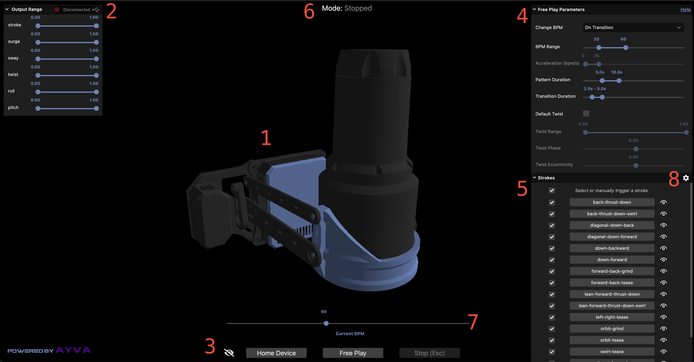Contents
- Emulator
- Output Range and Device Connection
- Controls
- Parameters
- Behaviors
- Mode
- Current BPM
- Stroke Designer
- Import / Export
- AyvaScripts
- Behavior File Format
1. Emulator
The emulator provides a 3D simulation of the movements of the device. The current version is of an OSR2+. It does not have a surge or sway axis (as available on the SR6), however, movements on those axes are still supported by the application and will be sent to an actual device when connected. Behaviors can be played on the emulator alone (a physical device does not have to be connected).
Controls:
- Click+Drag to rotate the camera.
- Mousewheel to zoom in and out.
- Shift+Click+Drag to pan.
2. Output Range and Device Connection
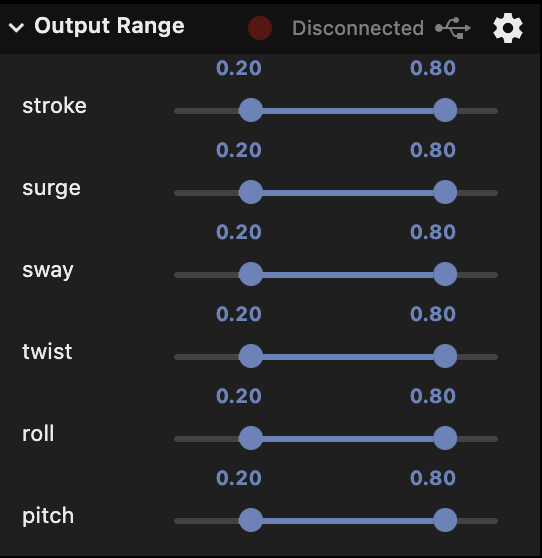
This section allows you to set the output type and the output range for all linear and rotational axes. The details on how Ayva scales output can be found in the Configuration documentation under the Axis Limits section.
The button in the top middle gives the output connection status. Clicking it will connect to the current output. The default output type is Serial. This can be changed by clicking the gear icon in the top right:
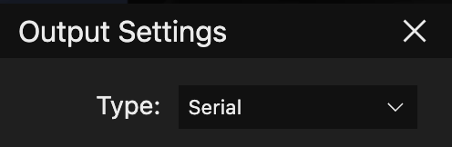Clicking the connect button again after an output is connected will disconnect.
Note: For safety reasons, connections can only be made when in Stopped mode. You will not be able to connect to an output if a stroke is currently playing.
3. Controls
- Eye Icon: Hide/show the UI.
- Home Device: Stops the current behavior and moves the device to the home position.
- Free Play: Commands Ayva to start playing behaviors randomly according to the current parameters.
- Stop (Esc): Immediately stops the current behavior and ceases to send any output to the device. Pressing the Escape key will also trigger this action.
4. Parameters
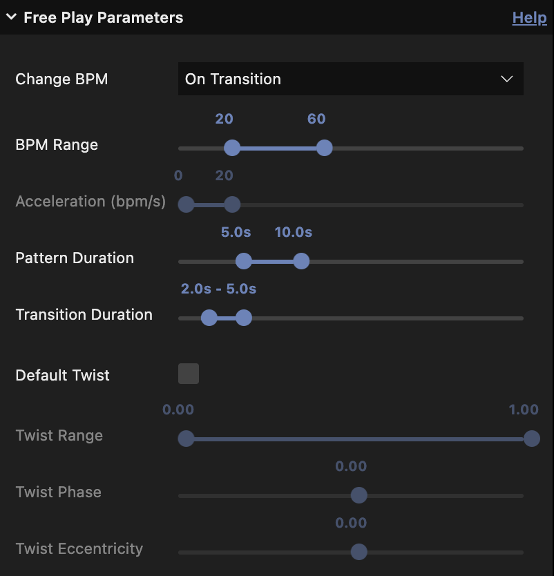
This section allows you to set the parameters that are used during free play mode (and some for manually triggered strokes). Most parameters in this section take effect on the next stroke played.
- Change BPM: Select when to change the BPM. The options are:
- On Transition - changes the BPM when a new stroke is selected.
- Continuously - continuously changes the BPM.
- BPM Range: The speed range of strokes in beats per minute. When a stroke is randomly selected, it will pick a random speed within this range.
- Acceleration (bpm/s): How fast to change the BPM in units of BPM per second. This is only enabled when in Continuous BPM change mode.
- Pattern Duration: The duration range of strokes in seconds. When a stroke is randomly selected, it will last for a random amount of seconds within this range.
- Transition Duration: The duration range for smooth transitions in seconds. When a new stroke is starting, the transition into the new stroke will take a random amount of seconds within this range.
- Default Twist: This option allows you to add custom motion to the twist axis for any stroke that doesn't have it (i.e. the twist motion specified here only takes effect if the current stroke playing does not have its own twist).
- Twist Range: When twist is enabled, this allows you to specify the range of the twist motion.
- Twist Phase: When twist is enabled, this allows you to specify the phase of the twist motion.
- Twist Eccentricity: When twist is enabled, this allows you to specify the eccentricity of the twist motion.
Default twist motion is a sinusoidal shaped movement. See the TempestStroke documentation for additional details on parameters such as phase and eccentricity.
5. Behaviors
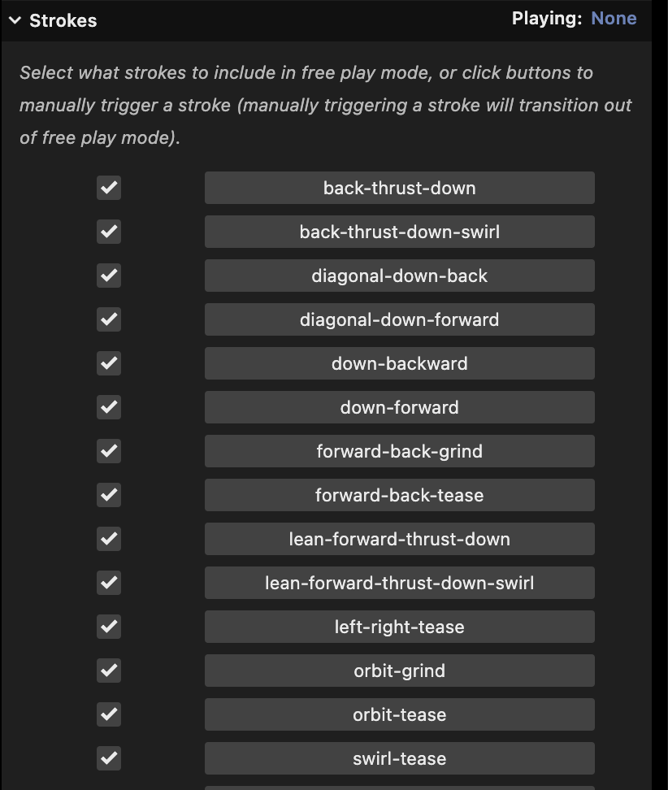
This section allows you to manage strokes and AyvaScripts.
- Select what strokes or scripts to include in free play mode. The top most checkbox can be used to select or deselect all behaviors.
- Manually trigger a behavior. Manually triggering a behavior transitions out of free play mode. In manual mode, the current behavior will play continuously until another behavior is selected, free play mode is triggered, or the behavior completes (in the case of an AyvaScript).
- Hover over the eye icon to quickly view a preview of the corresponding stroke. Previews are disabled for AyvaScripts.
- Access create, import, and export behaviors functionality. These features are covered in the Stroke Designer and AyvaScripts sections. This menu can only be accessed in Stopped mode. When a stroke or script is playing this area will instead show the name of the current behavior, as well as when a transition is occurring.
6. Mode
This label displays the current mode. It will be either Stopped, Free Play, or Manual.
7. Current BPM
This slider shows the current speed. In both Free Play and Manual mode the speed of the current stroke can be changed in real time. However, while you can set the speed in Free Play mode, Ayva can (and likely will) choose a new speed when it decides to play a new stroke. But Ayva will never change strokes while you are dragging the slider. This means that if you are in Free Play mode and you would like to stay on the current pattern without leaving Free Play, you could keep the bpm slider engaged until you are ready to switch.
Manually updating the bpm is not allowed during a transition or when an AyvaScript is playing (the widget will be disabled), as Ayva has full control of the speed during that time.
8. Stroke Designer
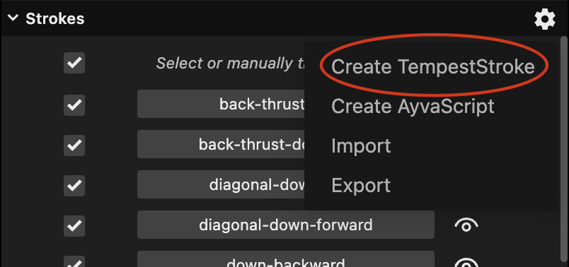
The stroke designer can be accessed by clicking the gear icon in the top right of the Strokes section, then clicking Create TempestStroke.
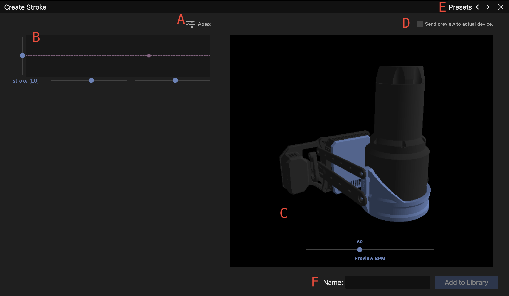
- Clicking the axes button allows you to select which axes to include in your stroke. All axes of an SR6 device are available.
- Motion can be specified for each axis with an interactive graph widget. The parameters available are:
- Range: The left slider sets the range. This is a dual slider specifying the from and to values for the motion. The knobs can be slid past each other to change the shape of the motion, as well as be set to the same value if you want the axis to hold a value for the duration of the motion.
- Phase: The bottom left slider sets the phase of the motion.
- Eccentricity: The bottom right slider sets the eccentricity of the motion.
- Noise: The two knobs on the bottom right set the noise (amount of variation) for either end of the range of motion.
- Function: The bottom right icon (fx) allows you to change the mathematical function. The options are Sinusoidal, Parabolic, or Linear
Double click a slider knob to reset to default value(s).
The progress dot on the graph will move along with the current motion in real time.
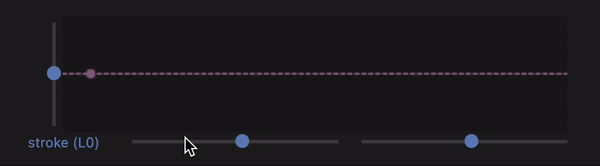
Note that when there are more axes than available space you can scroll to view the additional axes.
- The current motion will automatically preview on the emulator. The BPM can be adjusted to preview at higher or lower speeds.
- If a device is connected, you can optionally send the preview of the stroke to the actual device. This option is disabled by default, and will be unavailable if there is no device connected.
- Clicking the preset button will open a dropdown allowing you to select a stroke from the library (custom or default) as a starting point. You may also cycle through the presets by clicking the arrows.
- You can give your stroke a name and add it to the library. Names are restricted to lowercase alphanumeric characters and dashes, and must be unique. When a stroke is added to the library, it will be made available on the main screen for use in Free Play or Manual modes. It will also be available as a preset if you return to the stroke designer later.
Strokes can be editted by clicking the gear icon next to them on the main screen.
Note that all strokes are saved in the local storage of the browser, so they will remain between sessions. However, if you clear your browser storage then you will lose your strokes. To make a backup of your stroke(s) (or to share your strokes with others) you can use the import/export functionality as detailed in the next section.
9. Import / Export
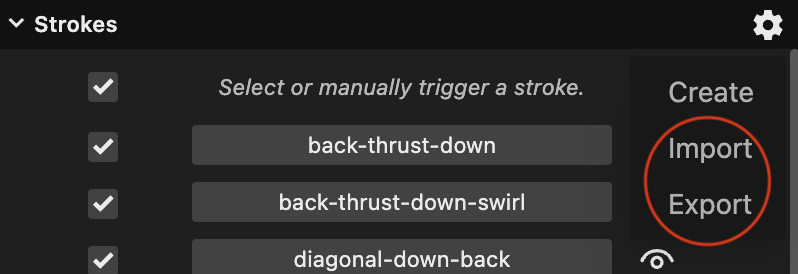
Import or Export of behaviors can be accessed by clicking the gear icon in the top right of the Strokes section. These will open the browser file dialogs and allow you to import or export a behavior file. When exporting this way, all custom behaviors will be exported. The option to export an individual behavior can be found by clicking the gear icon next to the desired behavior:
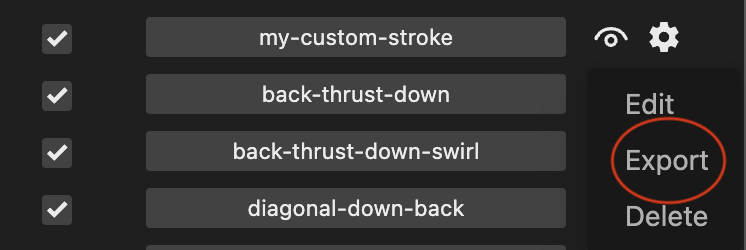
Note that this is also how you access the Edit and Delete functionality.
To import or export all app data, click the gear box in the lower left corner of the app:
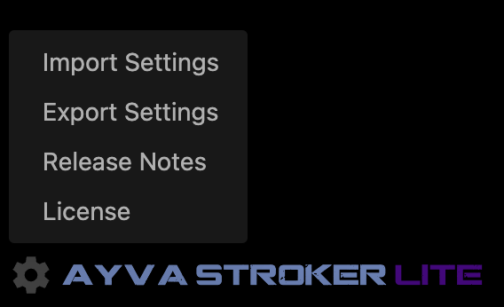
Note: This is also how you access the Release Notes.
10. AyvaScripts
Warning: AyvaScripts are an Advanced feature. To write AyvaScripts you should have familiarity with JavaScript, Ayva's Motion API , and Ayva's Behavior API.
AyvaScripts allow you to extend Ayva's functionality with custom scripts that can leverage the full power of Ayva.js's Motion and Behavior APIs. An AyvaScript is essentially just the body of the *generate() function of a GeneratorBehavior. The AyvaScript editor can be accessed by clicking the gear icon in the top right of the Strokes section, then clicking Create AyvaScript:
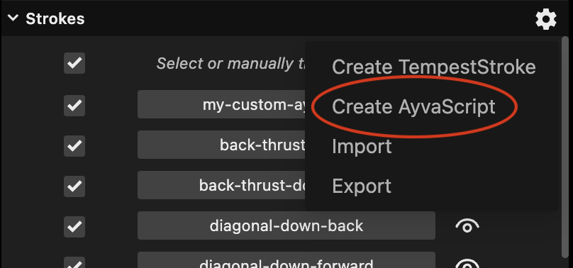
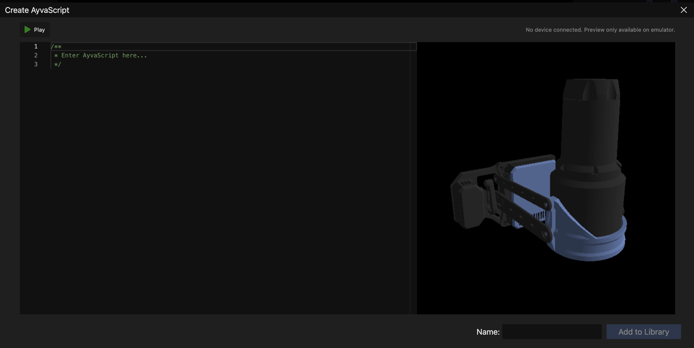
The body of an AyvaScript can be entered in the code editor on the left side, and previewed using the Play button on the top left. Anything that can be done in a GeneratorBehavior can be done in an AyvaScript.
Here is an example AyvaScript that does a basic up / down stroke on the main axis using a move builder:
const { stroke } = ayva.$;
yield stroke(0, 1);
yield stroke(1, 1);
Note that AyvaScripts have full control of Ayva and will run forever unless the user takes some action or the script stops itself.
A script can stop itself by setting its complete property to true. For example, here is a script that uses a VariableDuration object to perform a stroke for a random duration between 5 and 10 seconds:
const { stroke } = ayva.$;
// Create a new duration between 5 - 10 seconds if it doesn't exist.
this.duration = this.duration ?? new VariableDuration(5, 10);
yield stroke(0, 1);
yield stroke(1, 1);
if (this.duration.complete) {
this.complete = true;
}
This example also shows that you can use this to store data in between iterations.
Parameters
A special GLOBALS object is available to allow accessing data about the environment. For example, to take the user's parameters into account when constructing your behavior, you can use the parameters property. It is an object that contains the following properties:
twist: boolean. true if default twist is enabled. false if not.
bpm: array. The bpm range.
acceleration: array. The bpm acceleration range.
patternDuration: array. The pattern duration range.
transitionDuration: array. The transition duration range.
twistRange: array. The default twist range.
twistPhase: number. The default twist phase.
twistEcc: number. The default twist eccentricity.
bpmMode: string. The change bpm mode. Either transition or continuous
The following example is the same simple AyvaScript from above but it utilizes the user supplied bpm range to choose a random speed for each stroke:
const { stroke } = ayva.$;
const [ minBpm, maxBpm ] = GLOBALS.parameters.bpm;
const randomBpm = Ayva.map(Math.random(), 0, 1, minBpm, maxBpm);
const strokeDuration = 60 / randomBpm;
// Create a new duration between 5 - 10 seconds if it doesn't exist.
this.duration = this.duration ?? new VariableDuration(5, 10);
yield stroke(0, strokeDuration);
yield stroke(1, strokeDuration);
if (this.duration.complete) {
this.complete = true;
}
Input and Output
The TempestStroke that was currently playing is available on the input property. If no stroke was playing this property will be null. The following AyvaScript will smooth transition from the current stroke (if it exists) into an orbit-grind.
if (!this.stroke) {
// Initialize our stroke if we haven't already.
if (GLOBALS.input) {
// If there is an input stroke, perform a smooth transition.
this.stroke = GLOBALS.input.transition('orbit-grind', 45, 3);
} else {
// No input stroke, so perform a move to start transition.
this.stroke = new TempestStroke('orbit-grind', 45).bind(ayva);
yield* this.stroke.start();
}
}
yield* this.stroke;
An AyvaScript can set GLOBALS.output to a TempestStroke. This will allow for another script or Ayva Stroker to use that stroke to smoothly transition to the next behavior. The following example demonstrates this:
if (!this.stroke) {
// Initialize our stroke if we haven't already.
if (GLOBALS.input) {
// If there is an input stroke, perform a smooth transition.
this.stroke = GLOBALS.input.transition('orbit-grind', 45, 3);
} else {
// No input stroke, so perform a move to start transition.
this.stroke = new TempestStroke('orbit-grind', 45).bind(ayva);
yield* this.stroke.start();
}
}
GLOBALS.output = this.stroke;
yield* this.stroke;
Mode
An AyvaScript has access to the current mode through GLOBALS.mode. It can be either freePlay or manual. The following example will run forever if triggered in manual mode or will run for a duration based on the user parameters if in free play mode:
if (!this.stroke) {
// Initialize our stroke if we haven't already.
if (GLOBALS.input) {
// If there is an input stroke, perform a smooth transition.
this.stroke = GLOBALS.input.transition('orbit-grind', 45, 3);
} else {
// No input stroke, so perform a move to start transition.
this.stroke = new TempestStroke('orbit-grind', 45).bind(ayva);
yield* this.stroke.start();
}
}
if (GLOBALS.mode === 'freePlay') {
const [ minDuration, maxDuration ] = GLOBALS.parameters.patternDuration;
this.duration = this.duration ?? new VariableDuration(minDuration, maxDuration);
}
GLOBALS.output = this.stroke;
yield* this.stroke;
if (this.duration && this.duration.complete) {
// Only complete the script if a duration exists and it has elapsed.
this.complete = true;
}
This behavior will now fit seamlessly into free play or manual modes, smoothly transitioning out of or into other strokes.
Caveats
AyvaScripts run in a sandbox. So you do not have access to browser globals such as the window object. However, it is not a 100% secure sandbox. There are likely ways to get around the limitations, therefore you should not run code from untrusted sources.
Also, variable replacement in JavaScript template strings currently do not work and will result in an error if attempted.
11. Behavior File Format
Behavior files are JSON files. The top level object is an array containing all the behaviors. Each behavior has the following properties:
name: alphanumeric, dash separated name of the behavior.type: currently the only supported types are tempest-stroke and ayvascript.data: when the type is tempest-stroke this will be an object containing the stroke parameters, keyed by axis name or alias. When the type is ayvascript, this will be an object with a single property,script, that contains the entire script as a string.
Example
[
{
"name": "my-orbit-grind",
"type": "tempest-stroke",
"data": {
"L0": {
"from": 0,
"to": 0.6,
"phase": 0,
"ecc": 0.3
},
"R1": {
"from": 0.1,
"to": 0.9,
"phase": 1,
"ecc": -0.3
},
"R2": {
"from": 0.9,
"to": 0.1,
"phase": 0,
"ecc": -0.3
}
}
},
{
"name": "my-custom-ayvascript",
"type": "ayvascript",
"data": {
"script": "yield { to: 0, speed: 2 };\nyield { to: 1, speed: 1 };"
}
}
]